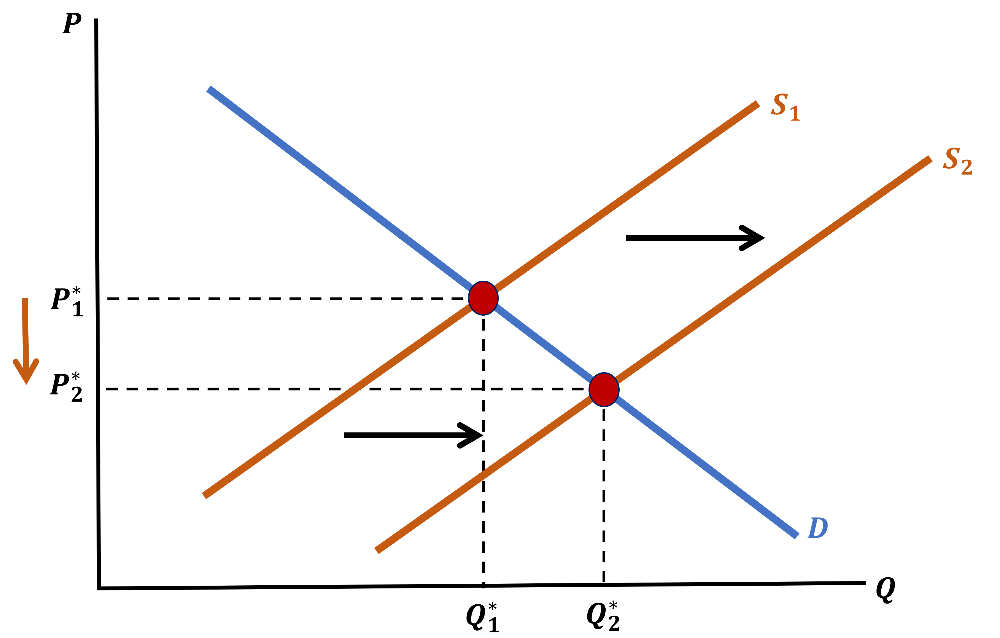
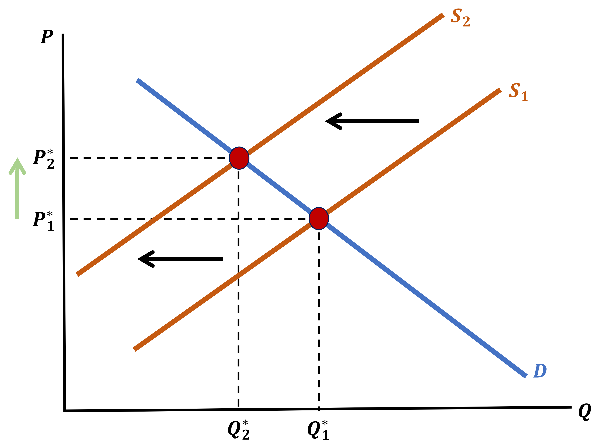
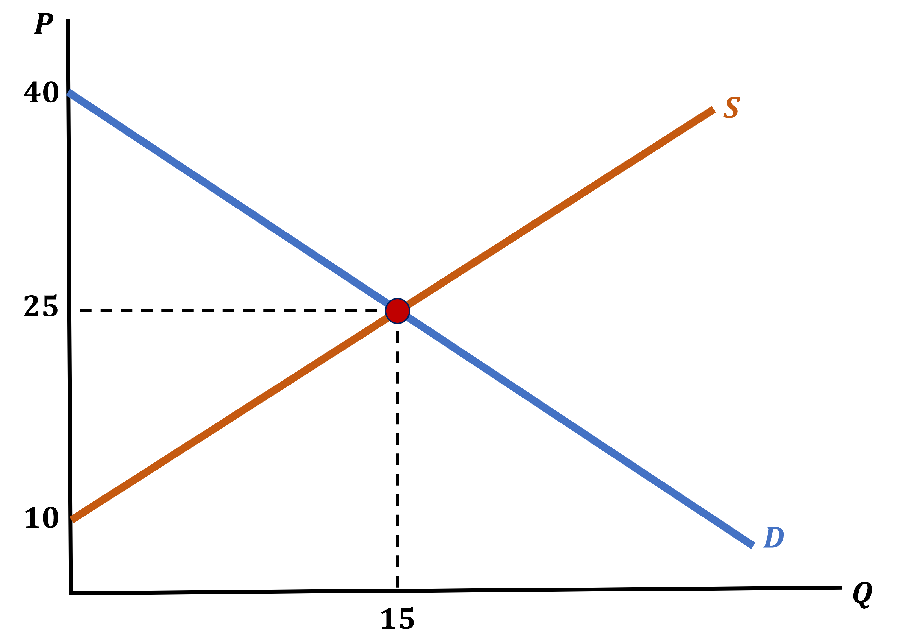
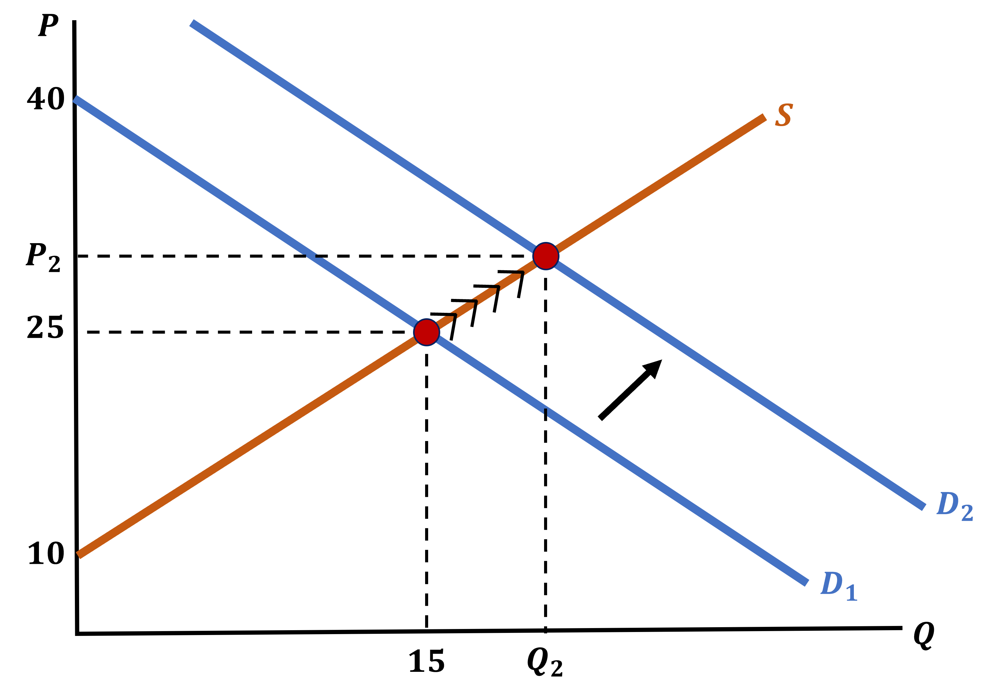
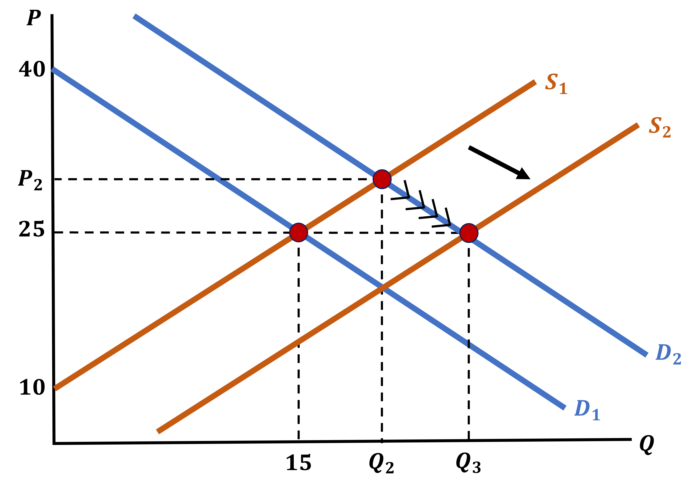
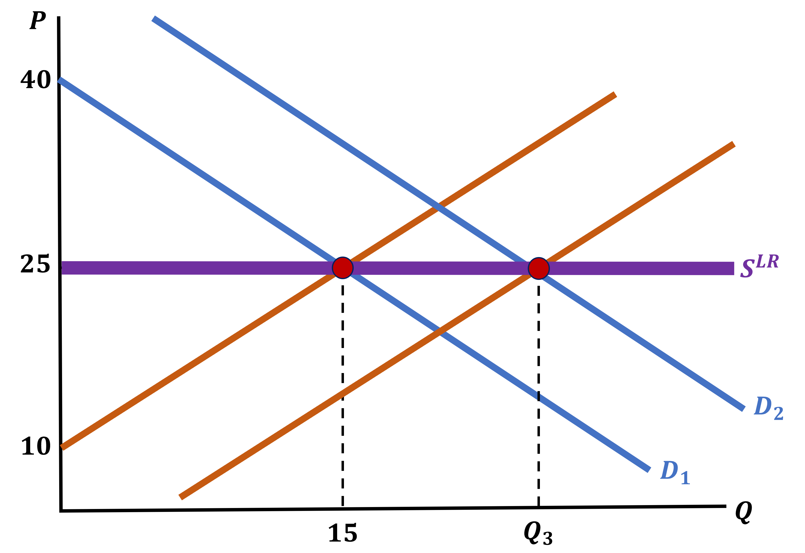
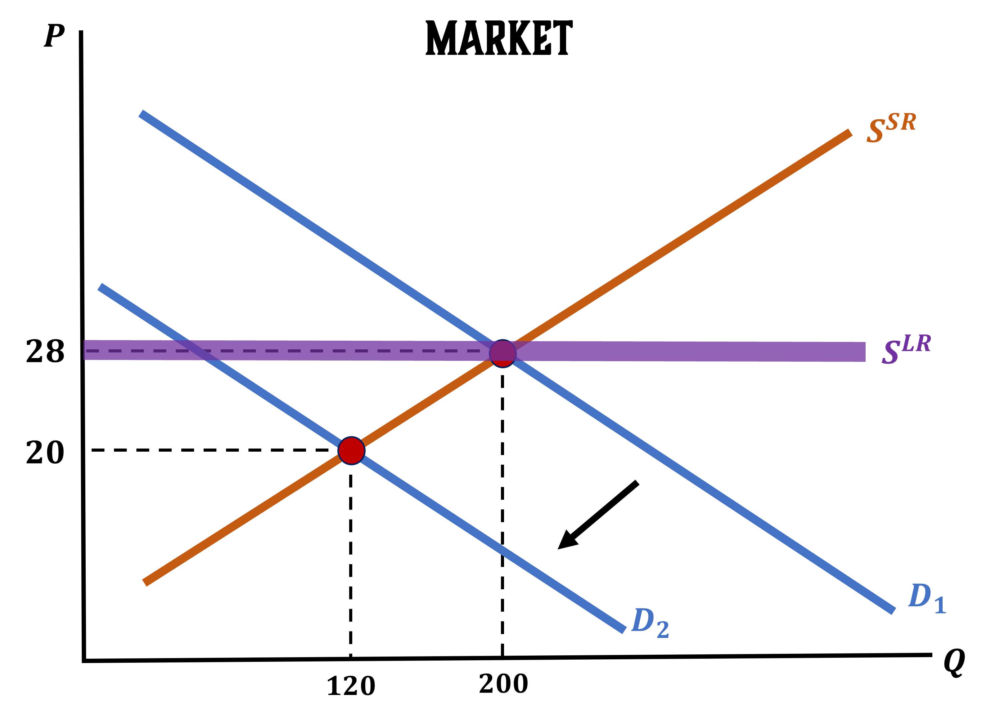
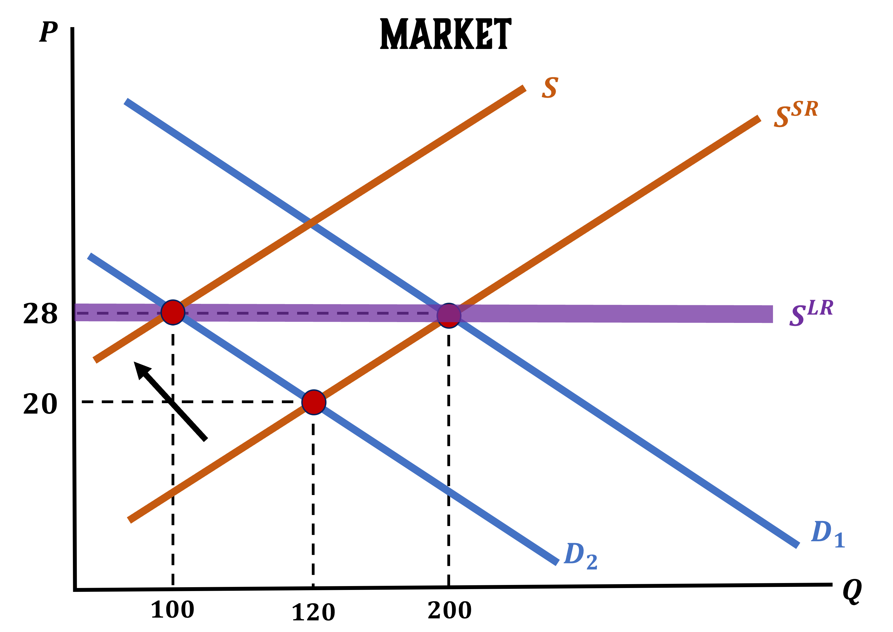

Profits and Market Feedback
Firms entering or exiting the market has a really important feedback effect
Do your best to recall from EC 201:
When the number of firms in an industry increases, what effect does this have on the market price?
. . .
It DECREASES the price

Profits and Market Feedback
When the number of firms in an industry decreases, what effect does this have on the market price?
. . .
It INCREASES the price

Long-Run Feedback Effect
The feedback has predictable outcomes that we can organize in our minds
\(P > \min\{ATC(Q)\}\)
- In the Short-Run, firms in the market make positive economic profits
- In the Long-Run, new firms enter the market
- The market now has more firms, which means there is more quantity produced
- This repeats until
\[ P = \min\{ATC(Q)\} \]
\(P < \min\{ATC(Q)\}\)
- In the Short-Run, firms in the market make negative economic profits
- In the Long-Run, firms exit the market
- The market now has less firms, which means there is less quantity produced
- This repeats until
\[ P = \min\{ATC(Q)\} \]
Long-Run Outcomes
No matter what price is initially, in the Long-Run we will always return to
\[ P = \min\{ATC(Q)\} \]
. . .
How do shifts in quantity affect market prices?
Negative Profits
- With a decrease in quantity, market prices climb with each firm that leaves until we return to zero-profits
Positive Profits
- With an increase in quantity, market prices decrease with each entering firm until we return to zero-profits
Long-Run Outcomes
So if prices in the Long-Run will always be
\[ P = \min\{ATC(Q)\} \]
What does this imply about profits in the Long-Run
. . .
There are no economic profits in the Long-Run!
But let’s be careful with interpreting what this means
Profits in the Long-Run
Saying there are zero economic profits can be a tricky phrase so let’s dive in:
- It does not mean that the firm is making zero money
- They have already paid their Labor (wages) and Capital (or shareholders if they financed capital through equity, for example)
- After all responsibilities are dealt with, there are zero profits above and beyond that
Why Care About the Short-Run?
If we know what happens in the Long-Run, then why care about the Short-Run?
. . .
The Short-Run is where interesting things happen
- It is where firms make big money, before competitors can catch up (Think early Tesla days and the EV market)
- It is where firms lose a lot of money because they are stuck operating at a loss (any restaurant ever)
- It is where demand shifts can cause major price distortions
- This is an interesting dynamic that we will use to transition to thinking about the market
Demand Shift Dynamics
Let’s imagine the following market:
- The Short-Run market supply curve is \(P = Q_{S} + 10\) when \(P > 10\)
- Assume that \(\min\{ATC(Q)\} = 25\)
- The demand curve is \(P = 40 - Q_{D}\)

Demand Shift Dynamics
Because initial price of 25 is equal to \(\min\{ ATC(Q) \}\) and there are no profits
- The market is in its Long-Run Equilibrium
. . .
Now imagine that this product gets much more popular
- What do we expect to happen with Demand?
. . .
It should shift to the right (increases)
Demand Shift Dynamics - Product Got More Popular

Demand Shift Dynamics
With an increase in Demand, we see that prices have also increased
- In the Short-Run, the same number of firms produce more and earn positive profits
- In the Long-Run, new firms enter the market
- This increases supply
Demand Shift Dynamics - Entry of New Firms

Demand Shift Dynamics
With a Supply increase:
- The shift of supply counteracts the increase in Demand and the price returns to \(\min\{ATC(Q)\}\)
- However, a lot more good are supplied overall
- In the Long-Run, each firm is supplying the same amount at \(Q_{3}\) as they were in the initial equilibrium
- There are just more firms now
Long-Run Market Supply Curve
We can graph the Supply Curve in the Long-Run
It is simply a flat line at \(P = \min\{ATC(Q)\}\)
- The quantity (and the number of firms in the market) is determined by Demand
Long-Run Market Supply Curve

Let’s Look at an Example
In this example we will:
- Find the Short-Run supply cure of the firm
- Find the market Short-Run Supply Curve when there are 20 identical firms
- Find the market Long-Run Supply Curve
- Graph both market supply curves, add demand and quantity, assuming the Long-Run Equilibrium
. . .
The Cost Function of a firm is
\[ C(Q) = Q^{2} + 8Q + 100 \]
Short-Run Supply Curve
\[ C(Q) = Q^{2} + 8Q + 100 \]
Short-Run Supply is \(\; P = MC\)
. . .
\[\begin{align*} MC = \frac{\partial C(Q)}{\partial Q} = 2Q + 8 \end{align*}\]
Set P = MC
\[\begin{align*} P = 2Q + 8 \end{align*}\]
Market Short-Run Supply Curve with 20 Identical Firms
\[ P = 2Q + 8 \]
First, we find the individual firm supply function
\[\begin{align*} P &= 2Q + 8 \\ 2Q &= P - 8 \\ Q &= \frac{P - 8}{2} \end{align*}\]
Market Supply Function will be \(\; N \cdot Q = Q_{S}\)
\[\begin{align*} Q_{S} &= N \cdot Q \\ Q_{S} &= 20 \cdot \left( \frac{P - 8}{2} \right) \\ Q_{S} &= 10P - 80 \end{align*}\]
Market Supply Curve Is:
\[\begin{align*} Q_{S} &= 10P - 80 \\ 10P &= Q_{S} + 80 \\ P &= \frac{Q_{S}}{10} + 8 \end{align*}\]
Market Long-Run Supply Curve
\[ \text{LR-Supply: } P = \min\{ATC(Q)\} \;\;\;\; \& \;\;\;\; C(Q) = Q^{2} + 8Q + 100 \]
We want an amount of Quantity and we will use the Zero-Profit Condition
Use \(\; MC = ATC(Q)\)
\[\begin{align*} ATC(Q) &= MC \\ Q + 8 + \frac{100}{Q} &= 2Q + 8 \\ Q \cdot \left( Q + 8 + \frac{100}{Q} \right) &= Q \cdot (2Q + 8) \\ Q^{2} + 8Q + 100 &= 2Q^{2} + 8Q \\ Q^{2} &= 100 \\ Q^{*} &= 10 \end{align*}\]
We also need to find \(\; P^{*}\)
\[\begin{align*} MC(Q) &= 2Q + 8 \\ MC(10) &= 2(10) + 8 \\ MC &= 28 \\ \\ \end{align*}\]
Use fact that P = MC
\[\begin{align*} P = MC = 28 \end{align*}\]
Graph SR & LR Supply, Demand, & Quantity
A Sudden Shock!!!
Now let’s throw a curveball
The market does not exist in isolation, it is affected by the world
Imagine that there is a sudden event that decreases the Market Price to 20
This raises the following questions:
- What is the Short-Run Effect on \(Q^{*} \; \Rightarrow \;\) Individual Firm Supply
- What is the Short-Run Effect on \(Q_{S} \; \Rightarrow \;\) Market Supply
A Sudden Shock \(\; \Rightarrow \;\) P = 20
From our previous work, we know that
\[ P = 2Q^{*} + 8 \]
We can use this information to find \(\;Q^{*}\)
Individual Firm Supply
\[\begin{align*} P &= 2Q^{*} + 8 \\ 20 &= 2Q^{*} + 8 \\ 12 &= 2Q^{*} \\ Q^{*} &= 6 \end{align*}\]
Market Supply
20 Firms are still in the market
\[\begin{align*} Q_{S} &= N \cdot Q^{*} \\ Q_{S} &= 20 \cdot 6 \\ Q_{S} &= 120 \end{align*}\]
A Sudden Graph!!!

Shock Implications on the Long-Run
We can also ask questions about the Long-Run
What is the Long-Run Effect on \(Q^{*} \; \Rightarrow \;\) Individual Firm Supply
If we assume that the Long-Run Effect on \(Q_{S}\) means that Market Supply will be equal to 100. How many firms remain in the Long-Run?
Long-Run Effects of the Shock
We know for a fact that in the Long-Run price will return to 28
What is the effect on individual firm supply?
There is NO Long-Run Effect on firm supply
\[\begin{align*} Q^{*} = 10 \end{align*}\]
If we know that \(\; Q_{S} = 100 \;\), how many firms are producing in this market?
. . .
\[\begin{align*} Q_{S} &= N \cdot Q^{*} \\ 100 &= N \cdot 10 \\ \frac{100}{10} &= N \\ N &= 10 \end{align*}\]
After the price shock, 10 firms exit the market and 10 firms stay
A Sudden Long-Run Graph!!!
